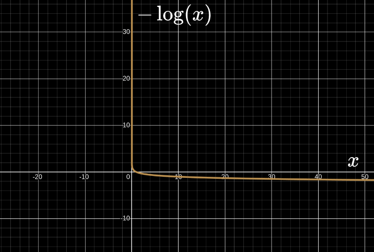
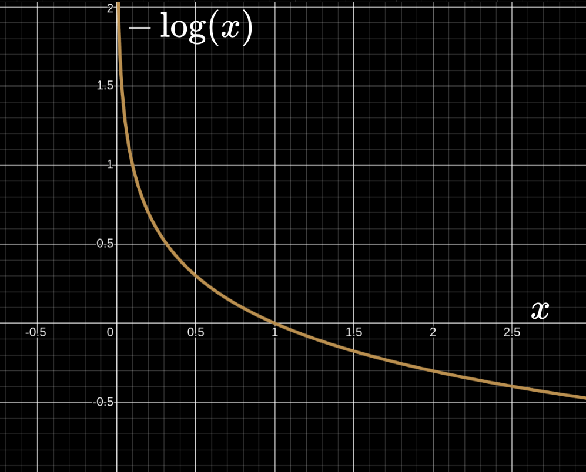

The standard barrier function to use is a log barrier. $\rho$ is barrier parameter that can be scaled to cause the solution to converge.
$$ \min_x \quad f(x) - \rho \, log(x) $$ The output is almost 0 in the interior. As solutions get close to the boundary, the output blows up to infinity.It is continuously differentiable.
If a problem is convex, of first order and is of moderate size, then this method is the gold standard. Since the derivatives of $log$ are continuous, Newton's method can be used and it does have fast quadratic convergence. It can give guarantees related to the convergence in terms of number of iterations and hence a hard real time guarantee. Because of which it is good for online control.Used in IPOPT - it is a nonlinear programming solver used extensively. There are other solvers that implement this method as well.
This method has a good general worst case performance.A log is an analytic function for which it is easy to compute gradients and Hessians always. This is an advantage.
In the penalty method, a penalty doesn't kick in until a system violates a constraint. A barrier on the other hand is designed such that a constraint can never be violated. Since the output (of the root finding problem with the cost) blows up to infinity (since the cost goes to infinity) on the constraint, the solution can never get there. The method keeps solutions strictly in the interior.As a side effect, the initial guess has to be feasible with respect to the constraints otherwise the penalty term goes to infinity which can lead to being ill-conditioned. The solution to this is the infeasible start trick.